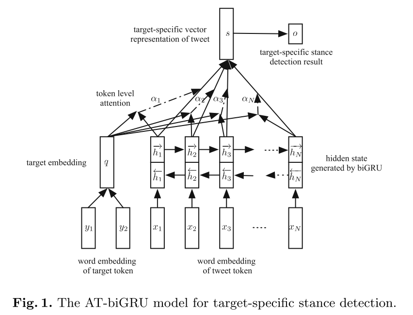
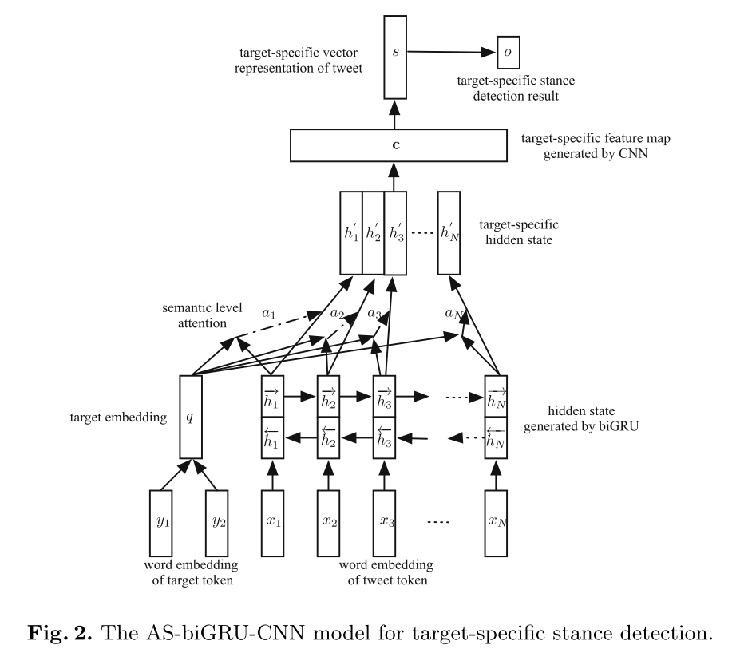
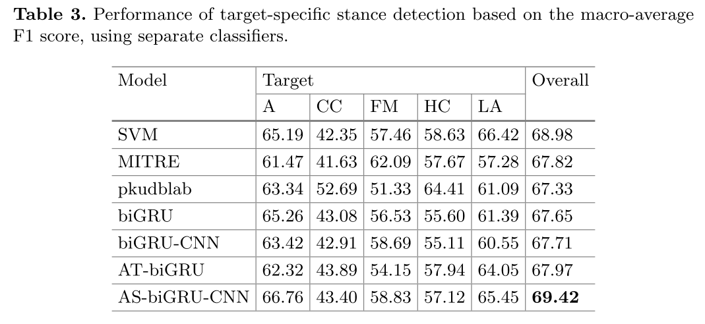

摘要
研究组最近关注于针对特定目标的立场检测。针对隐式提及的目标，或根本没有提及的目标构建文本的向量表示依然是个很有挑战的工作。因此本文在语义层面上采用了最新的注意力机制，提出了一个基于双向 GRU-CNN 的模型。在 SemEval-2016 Task 6.A 上进行实验，此模型超过了 SOTA 词级别注意力机制的 GRU 与 SVM 方法。
论文原文
Connecting Targets to Tweets: Semantic Attention-Based Model for Target-Specific Stance Detection
WISE 2017, Yiwei Zhou, University of Warwick, Coventry, UK
1 简介
针对具体目标的立场检测问题可以被定义为：给定一段文本 X 和一个目标 Y ，为每一个 X 针对给定的 Y ，从 {支持，反对，其他} 这三个类别中确定一个立场。目标可以是一个人，一个租住，一项政策，一场运动，一个产品等等。针对具体目标的力倡建祠与 aspect-level 的情感分析两个不同点：1. 可以从积极、消极、中性的发言中表达同一个立场。2. 立场检测中的目标并不一定出现在了文本里，可能是隐式提及的，可能根本没有提及。由于 Twitter 的文本通常很短，还有很多噪声，这个任务的主要挑战是针对具体目标进行立场检测的同时，使用很少一部分的上下文信息或额外信息。深度学习近期在机器翻译，问答系统，情感分析等领域取得了重大进展。但在 target-secific 的立场检测中并没有成功的应用深度学习，现有的结果甚至比传统的算法（手工特征工程 + SVM）更低。
不是文本中每个词对立场检测提供的信息量都一样，所以作者针对给定目标，使用了注意力机制。通过在语义层面引入目标信息与注意力机制，作者提出的模型超出了 SemEval-2016 中效果最好的模型。并且，不依赖额外收集的语料库来预训练 embedding，也不需要手工的特征工程。
2 神经网络模型在针对具体目标的立场检测中的应用
本节，首先介绍两个基本模型，1.双向 GRU的模型，2. 在 biGRU 基础上叠加 CNN 的模型。在这基础上，通过在 token-level 与 semantic-level 上引入注意力机制，分别得到 AT-biGRU 模型 和 AS-biGRU-CNN 模型。最后介绍计算目标 embedding 的方式，以及模型训练的细节。
2.1 biGRU 模型
通过引入门单元，GRU 可以解决梯度消失或梯度爆炸的问题。通过引入额外的记忆单元，GRU 可以捕捉到序列中的依赖关系。对于一个长度为 $N$ 的序列，[$x_1,x_2,…,x_N$]，通过以下公式，GRU 将其映射为一组隐层状态 [$h_1,h_2,…,h_N$] :
$$ r_n = \sigma (W_r x_n + U_r h_{n-1} + b_r) $$ $$ z_n = \sigma (W_z x_n + U_z h_{n-1} + b_z) $$ $$ \tilde{h_n} = tanh(W_h x_n + U_h (r_n \odot h_{n-1}) + b_b) $$ $$ h_n = (1 - z_n) \odot h_{n-1} + z_n \odot \tilde{h_n} $$其中 $n \in {1,…,N}$；$r_n$ 是复位门，$z_n$ 是更新门；$\tilde h_n \in \mathbb{R}^{d_1}$ 为记忆单元，$h_n \in \mathbb{R}^{d_1}$ 为 GRU 的隐层状态；$x_n \in \mathbb{R}^{d_0}$ 为每个词的 embedding 向量；$W_r, W_z, W_h \in \mathbb{R}^{d_1 \times d_0}$ 和 $U_r, U_z, U_h \in \mathbb{R}^{d_1 \times d_1}$ 表示可训练的权重矩阵，$b_r, b_z, b_h \in \mathbb{R}^{d_1}$ 表示可训练的偏置项；$\sigma(·)$ 表示 sigmoid 函数；$\odot$ 表示 element-wise multiplication 。
通过使用将正向 GRU 与反向 GRU 得到的隐层状态值拼接，得到 [$\overrightarrow{h} | \overleftarrow{h}$]，捕捉双向信息。
在 biGRU 模型中，输入文本的向量表示为 s：
$$ s = \overrightarrow{h_N} | \overleftarrow{h_1} $$
2.2 biGRU-CNN 模型
biGRU 将所有信息压缩在两个固定长度的隐层状态向量中，在存在长距离的依赖关系时可能会限制模型性能。根据所有 RNN 的隐层状态，输入到 CNN 网络中，得到一个动态的向量表示。具体的说，对拼接了 $k$ 次的隐层状态 $h_{h:i+k-1} \in \mathbb{R}^{2kd_1}$ 添加一个过滤器权重 $w_f \in \mathbb{R}^{2kd_1}$，计算得到 $c_i$：
$$ c_i = f(w^T_f h_{i:i+k-1} + b_f) $$
其中 $f$ 是 ReLu 函数，$b_f \in \mathbb{R}$ 是偏置项。对于所有的特征集合 $\textbf{c}$ = $(c_1,c_2,…,c_{N-k+1})$。通过 max 函数获取最重要的特征 $\hat{c}$：
$$ \hat{c} =max{\textbf{c}}$$
2.3 AT-biGRU 模型
机器翻译中首先提出的 token-level 的注意力机制，允许神经网络自动的在源句子中寻找与预测对应词相关的 token，并且遮蔽不相关的 token。本文中，为了使 biGRU 针对跟定目标可以自动寻找对应的部分来觉得这段文本的立场，作者提出了融合注意力机制的模型，如图 Fig.1：

在 AT-biGRU 模型中，文本的向量表示 $s$ 是隐层状态的加权和：
$$ s = \sum^n_{n=1} \alpha_n h_n $$
在上面的等式中，权重 $\alpha_n$ 的计算是：
$$ \alpha_n = \frac{exp(e_n)}{\sum^n_{n=1}exp(e_n)}$$
其中 $e_n \in \mathbb{R}$ 是用 $h_n$ 和目标 embedding $q$ 作为输入，通过多层感知机进行计算：
$$ e_n = att(h_n, q) = w^T_m(tanh(W_{ah}h_n + W_{aq} q + b_a)) + b_m$$
其中 $W_{ah} \in \mathbb{R}^{2d_1 \times 2d_1}; W_{aq} \in \mathbb{R}^{2d_1 \times 2d_2};b_a,w_m \in \mathbb{R}^{2d_1};b_m \in \mathbb{R}$ 计算 token-level 的注意力层优化参数。在 2.5 节，会介绍各种根据目标的词向量，生成目标 embedding $q \in \mathbb{R}^{b_2}$ 的方式。
2.4 AS-biGRU-CNN 模型
通过将 biGRUN-CNN 中的 $h_n$ 用融合了目标注意力的 ${h’}_n$，得到 AS-biGRU-CNN 模型。其中 ${h’}_n$ 的计算为：
$$ {h’}_n = a_n \odot h_n $$
其中 $a_n$ 的计算方式与 2.3 相同。

2.5 目标 Embedding
作者使用 biGRU 对训练目标词向量，得到 $q$。同时与常见的用目标词向量的平均值作为目标 embedding 进行了对比。
2.6 模型训练
对文本的向量表示 $s$ 添加 softmax 层，得到对应每个立场的概率。对于文本 $X$ ，给定特定目标 $Y$ 计算所属立场类别的概率 $z$，用 $P(z|X,Y)$。表示。模型目标为 $z’$ ：
$$ z' = argmax_{z \in \textbf{z}}P(z|X,Y) $$所有模型都是连续可导的，采用端到端的训练方法，用标准的反向传播训练。使用交叉熵作为损失函数。
3 实验结果
参数设置：
- 使用 Glove 100 的 word embedding on Wikipedia。
- biGRU 纬度为 128
- 对embedding 层的 dropout 为 0.2，对 GRU 的 dropout 为 0.3 ，对CNN 的 droput 为 0.5。
- CNN 的 $k \in {3,4,5}$
- 使用 Adam，momentum 参数为 0.9 和 0.999。
- mini-batch size 为 16
- 模型代码见：https://github.com/zhouyiwei/tsd
SemEval 数据有 5 个主题，针对每个主题分别训练模型，得到结果如下：

5 总结
针对 target-specific 的目标检测提出了 AS-biGRU-CNN 模型。主要贡献是首次引入 target 信息，并融合注意力机制。模型没有使用太多的额外信息，扩展性强。
Notes
实验中作者发现共享 target 和 tweet 的 embedding 效果比二者分别使用各自的 embedding 效果好。
实验发现用直接对 word embedding 平均替代 biGRU 训练 target 的 word embedding 后，AT-biGRU 从 67.97 提升到了 68.30，而 AS-biGRU-CNN 从 69.42 降低到了 68.35。作者解释如下（我没读懂，难受）
One possible explanation could be that a simple averaging approach is insufficient to capture the semantic meanings of the targets, thus for the biGRU-CNN model, which has stronger expressive power than the biGRU model in target-specific Stance Detection, it is helpful to use more flexible target embeddings to perform complex inference. However, for the AT-biGRU model, the target embeddings generated by biGRU surpass its capability to learn and generalise. This is also the reason why stacking the CNN structure on top ofthe AT-biGRU model cannot help to improve the performance, as it does in the AS-biGRU-CNN model.
由于数据集有 5 个主题，每个主题下的数据量不同，而且样本中各个立场的比例也不均匀。作者假设在各个立场上的上下文可以 「jointly modelling the interaction between stances and contexts of all the available targets」。所以作者尝试了用一个模型在这 5 个立场上训练。结果发现数据量少的话题上 F1 有提升，数据量多的话题上 F1 有下降。对于样本不足，jointly 训练有帮助，对于样本充足，额外信息反而会让模型效果下降。
所有基于网络的模型都比 SVM 效果好，也许是因为网络模型使用的是连续向量表示文本，SVM 使用的是根据特征工程得到的离散的特征。连续的词向量表示可以时词之间共容易发生信息传递。